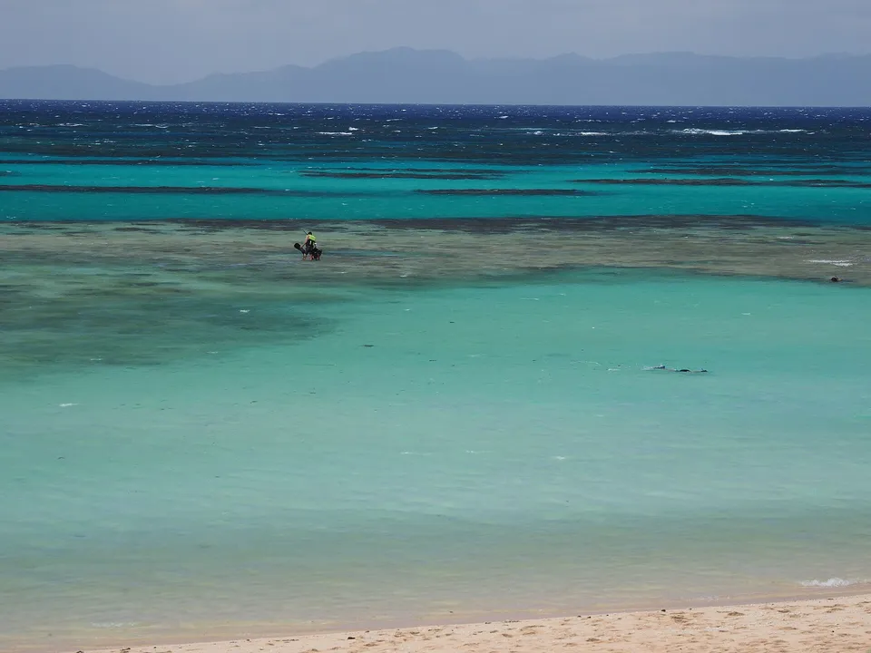
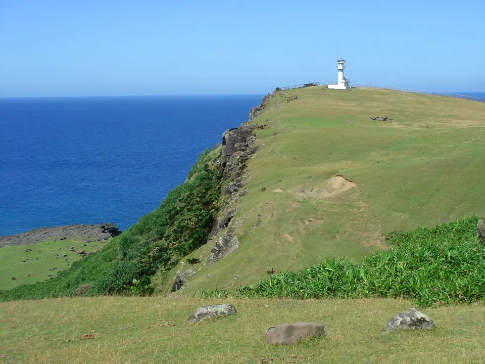
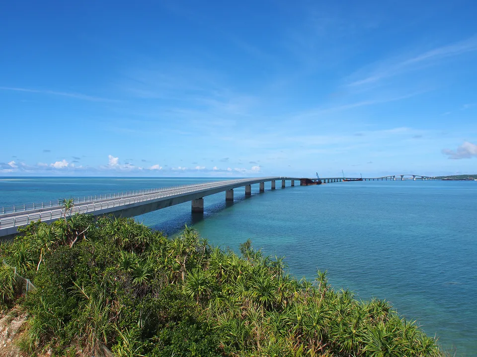
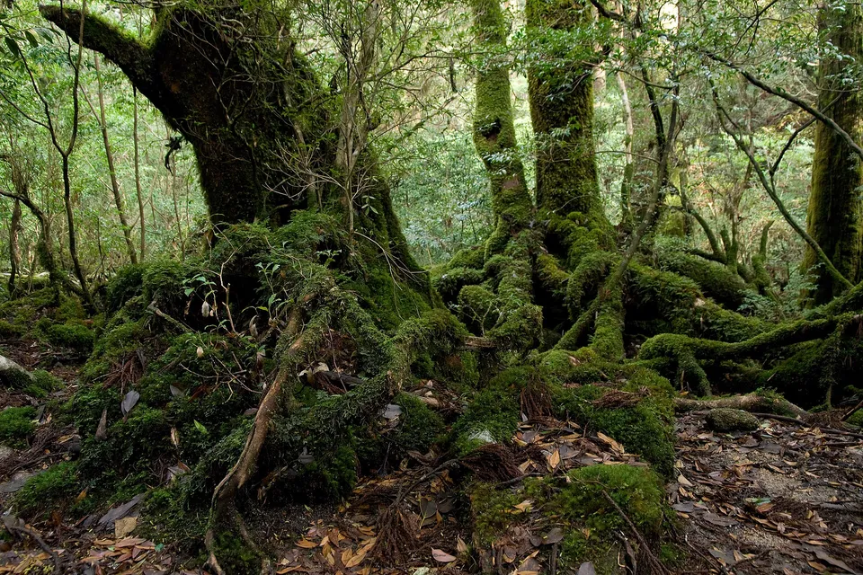
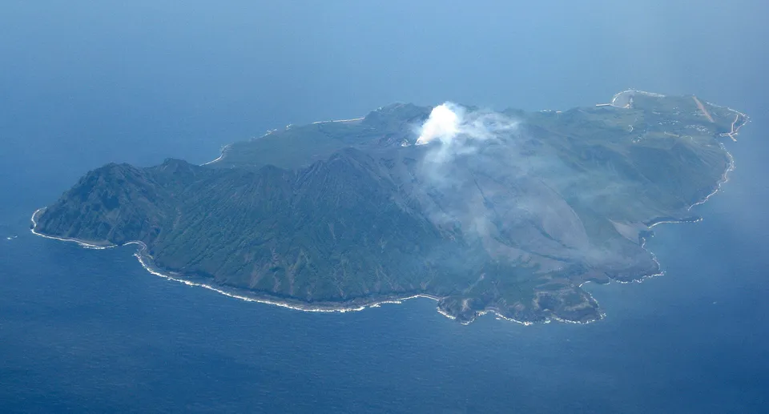
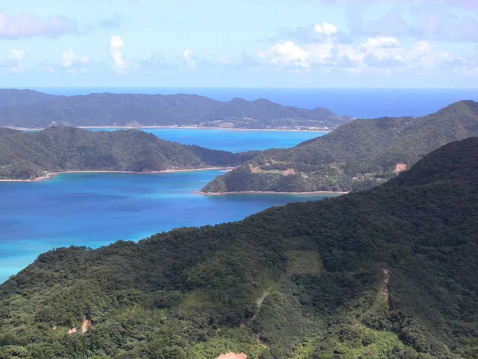
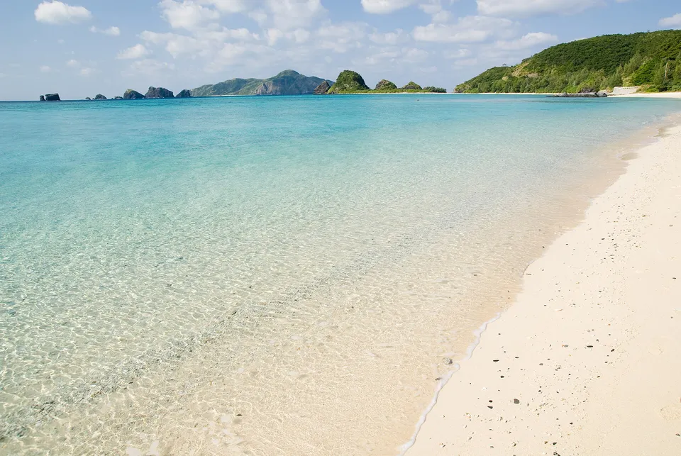
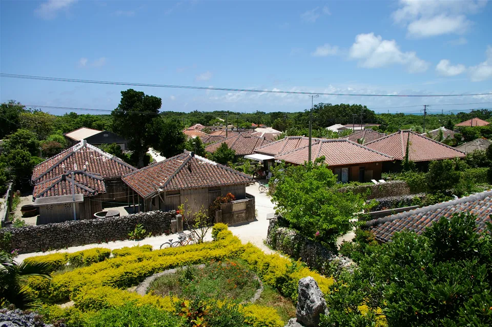

{kind=link}
Between Kyushu and Taiwan there are 68 islands with people on them. A handful are famous — Yakushima's cedars, Miyako's beaches, Ishigaki and Iriomote — and the rest are the reason to come back: Tokara's volcano villages, the Amami strait, the Kerama forty minutes from Naha, Hateruma at the bottom, Yonaguni at the western edge, and Daitō, which belongs to nothing.
The southern slice of our national island table — same numbers, grouped by archipelago, with the gateway for each.



Photos: Nishihama on Hateruma, the southernmost inhabited island in Japan — Paipateroma via Wikimedia Commons, CC BY-SA 4.0 · Cape Agarizaki, Yonaguni — Taiwan is 111 km west — Metatron via Wikimedia Commons, CC BY-SA 3.0 · The Irabu Bridge from Miyako — 3.5 km, toll-free — Paipateroma via Wikimedia Commons, CC BY-SA 4.0
{kind=link}
{kind=link}
{kind=link}
Twelve hundred kilometres of islands
The Nansei Islands run 1,200 km from the tip of Kyushu to within sight of Taiwan. 68 of them have people: the big, busy ones everyone has heard of — Yakushima, Amami, Miyako, Ishigaki — and fifty smaller ones that range from bridged suburbs of Okinawa Island to a volcano with seventy people on it. They are split between two prefectures, Kagoshima in the north and Okinawa from Yoron's horizon south, and the split is also a change of language, food, roof tiles and history: the Amami islands were taken from the Ryukyu Kingdom by Satsuma in 1609, and the rest were the kingdom until 1879.
This is the southern slice of our table of every inhabited island in Japan: same source, same columns, grouped by archipelago. Okinawa Island itself is not in the roster (it is the mainland here), and Kagoshima's islands in the Yatsushiro Sea and the Koshiki group face the other way and are left to the national table.
The shape of it
Source: SHIMADAS (Japan Islands Center, 2019 edition), 2015 census and GSI; eight islands from Japanese Wikipedia as noted under the table.
The groups, north to south
Eight groups, and almost nobody does more than two in one trip. From north to south:

Yakushima and Tanegashima
The first islands south of Kyushu. Yakushima (12,913 people, 540 km²) is the cedar forest — World Heritage since 1993, the Shiratani gorge that became Princess Mononoke's forest, and rain that locals say falls 35 days a month. Tanegashima next door (29,847) has the space centre and the surf. Jet-foil from Kagoshima in two to three hours, or a short flight. Kuchinoerabu and the three Mishima islands are the volcanic outliers.
{kind=link}

The Tokara Islands
Seven inhabited islands in a line, 700 people between them, one ferry from Kagoshima twice a week that takes 13 hours to the last one. Suwanosejima is an active volcano with 73 people on its flank; Akusekijima has the masked Boze festival; Takarajima has the pirate-treasure legend. Toshima is the longest village in Japan, 160 km end to end.
{kind=link}

The Amami Islands
Amami Ōshima (59,828 people, 712 km²) is the biggest island on this page outside Okinawa and on the 2021 World Natural Heritage list for its forests and the Amami rabbit. Around it: Kakeroma, Uke and Yoro in the strait; Kikai, a raised coral island; Tokunoshima with its bullfights and centenarians; Okinoerabu's caves; Yoron, with a sandbar that appears at low tide and Okinawa on the horizon. Direct flights from Tokyo and Osaka; the Kagoshima–Naha ferry calls at all of them.
{kind=link}

Kerama, Kume and the islands around Okinawa
The Kerama — Tokashiki, Zamami (597 people), Aka, Geruma — are 40 km and under an hour from Naha, a national park, and the water people mean by "Kerama blue"; humpbacks in winter. Kume is a 35-minute flight with a seven-kilometre sandbar. Closer in, sixteen islands ring Okinawa Island — Kouri, Sesoko, Henza and Hamahiga by bridge, Ie by ferry from Motobu, and Kudaka, the sacred island, fifteen minutes from Azama.
{kind=link}
Miyako
Miyako (34,649 people) has direct flights from Tokyo and Osaka, the seven-kilometre Yonaha-Maehama beach, and bridges to Ikema, Kurima and Irabu — the Irabu bridge, 3.5 km, is the longest toll-free one in Japan. Shimoji's airport reopened to airlines in 2019. Tarama and its Minna islet sit halfway to Ishigaki; Ōgami, 28 people, is the island in the photo that nobody visits.

Yaeyama
Ishigaki (47,564) is the hub with flights from the mainland; from its port Taketomi is ten minutes (the red-roofed village, the water-buffalo cart), Kohama and Kuroshima half an hour, Iriomote (2,314 people on an island that is ninety per cent jungle, with about a hundred wild cats) forty minutes. Hateruma, an hour away on a rough crossing, is the southernmost inhabited island in Japan; Yonaguni, a flight west, is the westernmost, with Taiwan 111 km away and horses on the cliffs.
{kind=link}
The table: all 68
Every inhabited island of the chain, north to south, grouped the way the ferries and flights group them. Sort by people or size, or type a name.
| Island | Prefecture · group | People ▾ | km² ▾ | Read more |
|---|---|---|---|---|
| Tanegashima種子島 | KagoshimaŌsumi & Mishima | 29,847 | 444 | Wikipedia |
| Yakushima屋久島 | KagoshimaŌsumi & Mishima | 12,913 | 540 | Wikipedia |
| Kuroshima黒島 | KagoshimaŌsumi & Mishima | 190 | 15 | Wikipedia |
| Kuchinoerabu-jima口永良部島 | KagoshimaŌsumi & Mishima | 152 | 36 | Wikipedia |
| Iōjima硫黄島 | KagoshimaŌsumi & Mishima | 130 | 12 | Wikipedia |
| Takeshima竹島 | KagoshimaŌsumi & Mishima | 78 | 4.22 | Wikipedia |
| Nakanoshima中之島 | KagoshimaTokara | 171 | 34 | Wikipedia |
| Takarajima宝島 | KagoshimaTokara | 148 | 7.07 | Wikipedia |
| Kuchinoshima口之島 | KagoshimaTokara | 103 | 13 | Wikipedia |
| Akusekijima悪石島 | KagoshimaTokara | 79 | 7.49 | Wikipedia |
| Suwanosejima諏訪之瀬島 | KagoshimaTokara | 73 | 28 | Wikipedia |
| Tairajima平島 | KagoshimaTokara | 71 | 2.08 | Wikipedia |
| Kodakarajima小宝島 | KagoshimaTokara | 55 | 1.00 | Wikipedia |
| Amami Ōshima奄美大島 | KagoshimaAmami | 59,828 | 712 | Wikipedia |
| Tokunoshima徳之島 | KagoshimaAmami | 23,497 | 248 | Wikipedia |
| Okinoerabujima沖永良部島 | KagoshimaAmami | 12,996 | 94 | Wikipedia |
| Kikaijima喜界島 | KagoshimaAmami | 7,212 | 57 | Wikipedia |
| Yoronjima与論島 | KagoshimaAmami | 5,327 | 21 | Wikipedia |
| Kakeromajima加計呂麻島 | KagoshimaAmami | 1,262 | 77 | Wikipedia |
| Ukejima請島 | KagoshimaAmami | 92 | 13 | Wikipedia |
| Yoroshima与路島 | KagoshimaAmami | 84 | 9.35 | Wikipedia |
| Iejima伊江島 | OkinawaAround Okinawa Island | 4,260 | 23 | Wikipedia |
| Izena Island伊是名島 | OkinawaAround Okinawa Island | 1,517 | 14 | Wikipedia |
| Yagajishima屋我地島 | OkinawaAround Okinawa Island | 1,443 | 7.81 | |
| Henza Island平安座島 | OkinawaAround Okinawa Island | 1,164 | 5.44 | Wikipedia |
| Iheya Island伊平屋島 | OkinawaAround Okinawa Island | 1,141 | 21 | Wikipedia |
| Sesoko Island瀬底島 | OkinawaAround Okinawa Island | 784 | 2.99 | Wikipedia |
| Ōjima奥武島 | OkinawaAround Okinawa Island | 750 | 0.23 | |
| Miyagijima宮城島 | OkinawaAround Okinawa Island | 626 | 5.54 | |
| Hamahiga Island浜比嘉島 | OkinawaAround Okinawa Island | 459 | 2.09 | Wikipedia |
| Tsuken Island津堅島 | OkinawaAround Okinawa Island | 391 | 1.88 | Wikipedia |
| Kōrijima古宇利島 | OkinawaAround Okinawa Island | 346 | 3.17 | |
| Ikeijima伊計島 | OkinawaAround Okinawa Island | 230 | 1.72 | |
| Kudaka Island久高島 | OkinawaAround Okinawa Island | 206 | 1.36 | Wikipedia |
| Miyagijima宮城島 | OkinawaAround Okinawa Island | 113 | 0.24 | |
| Noho Island野甫島 | OkinawaAround Okinawa Island | 94 | 1.08 | Wikipedia |
| Minna Island水納島 | OkinawaAround Okinawa Island | 41 | 0.47 | |
| Kume Island久米島 | OkinawaKerama & the west | 7,733 | 60 | Wikipedia |
| Aguni Island粟国島 | OkinawaKerama & the west | 759 | 7.65 | Wikipedia |
| Tokashiki Island渡嘉敷島 | OkinawaKerama & the west | 728 | 15 | Wikipedia |
| Zamami Island座間味島 | OkinawaKerama & the west | 597 | 6.70 | Wikipedia |
| Tonakijima渡名喜島 | OkinawaKerama & the west | 430 | 3.87 | |
| Aka Island阿嘉島 | OkinawaKerama & the west | 248 | 3.80 | Wikipedia |
| Geruma Island慶留間島 | OkinawaKerama & the west | 58 | 1.15 | Wikipedia |
| Ōjima奥武島 | OkinawaKerama & the west | 22 | 0.63 | |
| Ōhajimaオーハ島 | OkinawaKerama & the west | 7 | 0.37 | |
| Mae Island前島 | OkinawaKerama & the west | 1 | 1.59 | Wikipedia |
| Minamidaitōjima南大東島 | OkinawaDaitō | 1,329 | 31 | Wikipedia |
| Kitadaitōjima北大東島 | OkinawaDaitō | 629 | 12 | Wikipedia |
| Miyako Island宮古島 | OkinawaMiyako | 34,649 | 159 | Wikipedia |
| Irabu Island伊良部島 | OkinawaMiyako | 4,693 | 29 | Wikipedia |
| Tarama Island多良間島 | OkinawaMiyako | 1,189 | 20 | Wikipedia |
| Ikema Island池間島 | OkinawaMiyako | 567 | 2.83 | Wikipedia |
| Kurima-jima来間島 | OkinawaMiyako | 161 | 2.84 | Wikipedia |
| Shimoji-shima下地島 | OkinawaMiyako | 76 | 9.68 | Wikipedia |
| Ogami Island大神島 | OkinawaMiyako | 28 | 0.24 | Wikipedia |
| Minna Island水納島 | OkinawaMiyako | 5 | 2.16 | |
| Ishigaki Island石垣島 | OkinawaYaeyama | 47,564 | 222 | Wikipedia |
| Iriomote Island西表島 | OkinawaYaeyama | 2,314 | 290 | Wikipedia |
| Yonaguni与那国島 | OkinawaYaeyama | 1,843 | 29 | Wikipedia |
| Kohama Island小浜島 | OkinawaYaeyama | 631 | 7.86 | Wikipedia |
| Hateruma波照間島 | OkinawaYaeyama | 493 | 13 | Wikipedia |
| Taketomi Island竹富島 | OkinawaYaeyama | 348 | 5.43 | Wikipedia |
| Kuroshima黒島 | OkinawaYaeyama | 156 | 10 | Wikipedia |
| Hatoma鳩間島 | OkinawaYaeyama | 65 | 0.96 | Wikipedia |
| Yubu Island由布島 | OkinawaYaeyama | 16 | 0.15 | Wikipedia |
| Aragusuku Islands新城島（上地・下地） | OkinawaYaeyama | 10 | 1.76 | Wikipedia |
| Kayamajima嘉弥真島 | OkinawaYaeyama | 2 | 0.39 | Wikipedia |
68 islands. Population and area are the figures printed in SHIMADAS (2019 edition; 2015 census and GSI). Eight islands the extraction missed — Kuchinoshima, Nakakoshiki, Takeshima, Ukejima, Ikarajima, Zamami, Ikema and Hatoma — are taken from their Japanese Wikipedia articles, with the population as dated there. Okinawa Island itself is not a "remote island" in the roster and is not listed; the Koshiki and Yatsushiro-sea islands of Kagoshima are in the national table.
The Japanese (and Okinawan) you'll actually use
Common questions
What are the Nansei Islands?
The chain of islands between Kyushu and Taiwan: the Ōsumi islands (Tanegashima, Yakushima), Tokara, Amami, the Okinawa islands, Miyako and Yaeyama, plus the Daitō islands to the east. 68 of them are inhabited; the northern half is Kagoshima prefecture, the southern half Okinawa.
Which is the best island to visit?
It depends what you want: Yakushima for forest and hiking, Zamami or Aka for a quick beach trip from Naha, Miyako for beaches with direct flights, Ishigaki as a base for Taketomi and Iriomote, Amami for the quiet version of all of it. Most people pick one gateway (Kagoshima, Naha or Ishigaki) and two islands.
How do I get to the Yaeyama islands?
Fly to Ishigaki (direct from Tokyo, Osaka, Nagoya, Naha), then take the ferries from Ishigaki port: Taketomi 10 min, Kohama and Kuroshima about 30, Iriomote 40–45, Hateruma about 60. Yonaguni is a flight from Ishigaki or Naha, or a twice-weekly four-hour ferry.
Is the southernmost island in Japan Hateruma?
Hateruma is the southernmost inhabited island; Okinotorishima, far to the east, is the southernmost territory but has no one on it. Yonaguni is the westernmost inhabited island.
Are the population figures current?
They are the 2015 census as printed in the 2019 edition of SHIMADAS; most islands have fewer people now, though Miyako and Ishigaki have grown.
Read next
Sources: SHIMADAS (Japan Islands Center, 2019 edition) for the roster and figures (2015 census, GSI); only published figures are reproduced, no text. Eight islands missing from our extraction are filled from Japanese Wikipedia and marked as such. Grouping is ours; ferry and flight times are rounded from the operators' timetables and change by season. English article links verified by prefecture; a blank means unverified. Photos are Creative Commons — credits under each image.